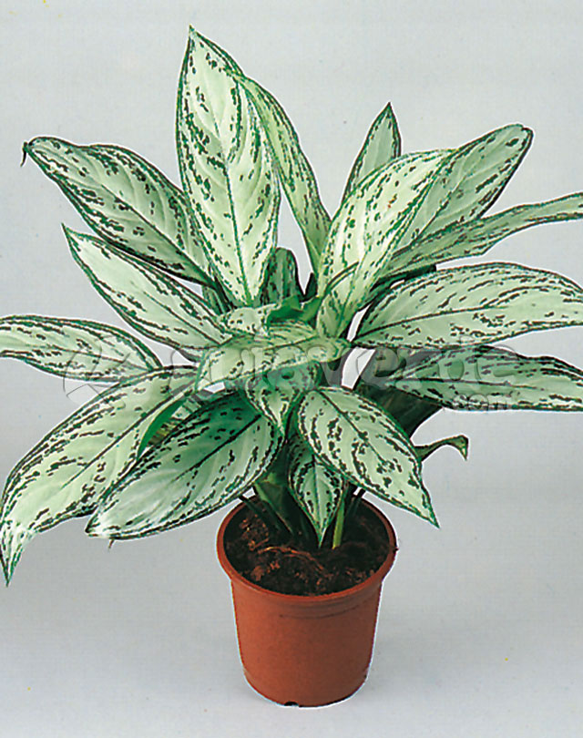
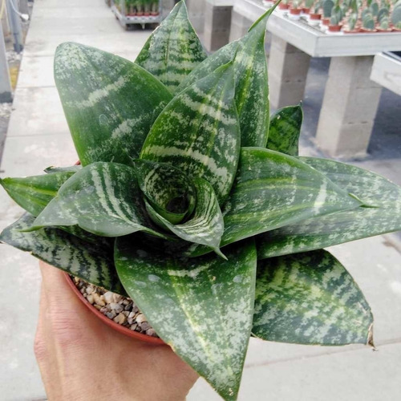

costilla de adan

Descripcion: Se le da este nombre por sus hojas en forma
de costillar y su nombre científico por la palabra latina para "monstruosa" o "anormal",
por sus hojas de tamaño inusual con agujeros naturales y por el sabor de su fruto que,
en condiciones óptimas, tiene un sabor similar al de la piña. esta planta es resistente a interiores.
Aglaonemas

Descripcion: Es la planta perfecta para quienes quieran disfrutar de naturaleza tropical frondosa
y llamativa ya que posee hojas anchas. Más allá de su atractivo, los cuidados de la aglaonema hacen de ella la planta ideal para muchos hogares.
A pesar de las apariencias, no es excesivamente exigente en lo que respecta a la luz.
Sansevieria enana

Descripcion: Su resistencia y su poca necesidad de luz ni riego la convierten en una planta espectacular para cualquier persona,
incluso, para aquellas que no tienen mano con las plantas. es una planta muy resistente y lo especial de esta planta es que purifica el ambiente.